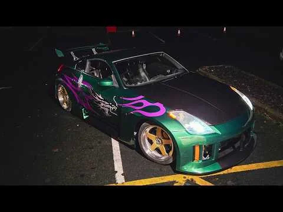

El carro que se robo la pantalla en aquello lejano año del 2004, el tuning estaba en su total auge, Electronic Arts estaba en el exito absoluto luego de haber sacado el primer titulo dee la serie underground, nesecitaban

desarrollado por Pedro Rodriguez